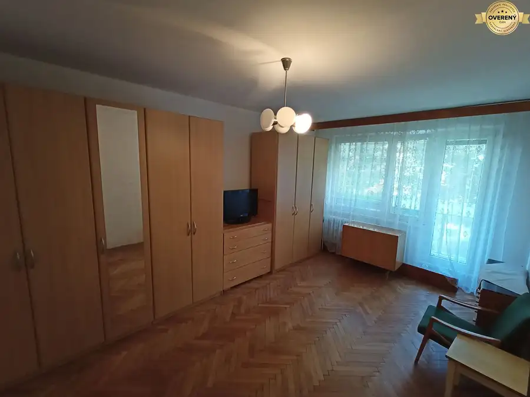
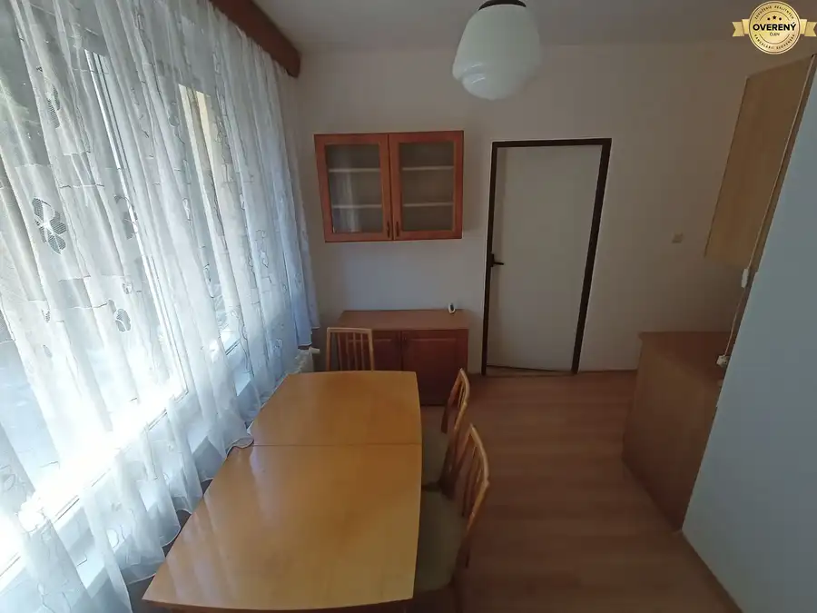
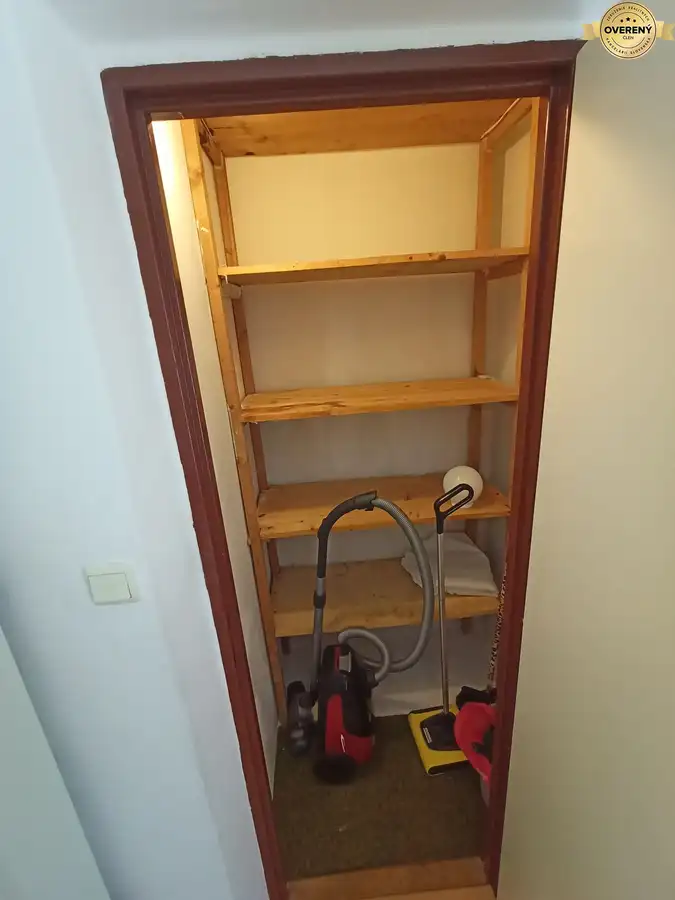
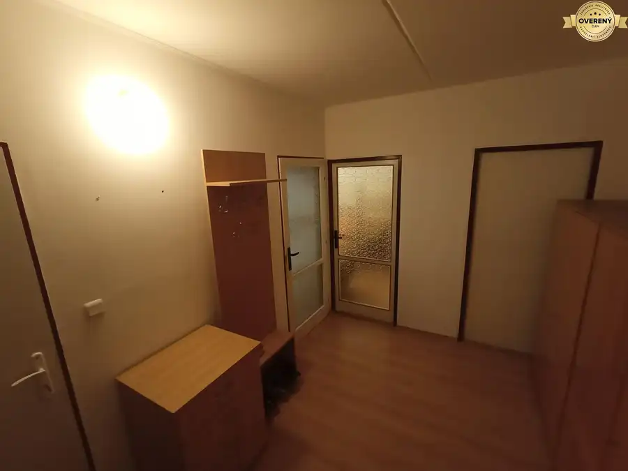
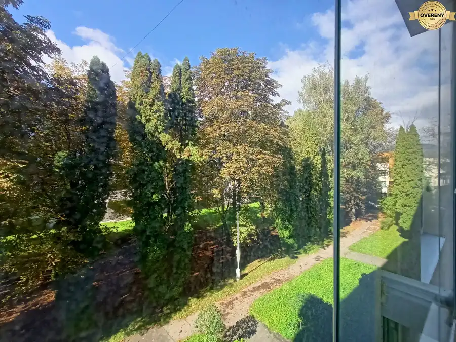

Veľký 2 izbový byt na Severe na predaj - PREDANÝ
Martin





- Dispozícia2-izbový
- Plocha68 m²
- Poschodie2. z 1
- Stavčiastočne prerobený
- Vlastníctvoosobné
O nehnuteľnosti
Exkluzívne ponúkame možnosť kúpy veľkého 2 izbového bytu na Severnej ulici v Martine. Byt sa nachádza na 2. poschodí v 6 podlažnom, zateplenom bytovom dome s výťahom.
V bytovom dome sa nachádzajú prípojky na internet viacerých operátorov vrátane optického internetu. Bytový dom nemá vystavený energetický certifikát. Kúrenie je centrálne, napojené na tepláreň.
Rozloha bytu je 68 m2. Byt bol dávnejšie čiastočne zrekonštruovaný. Je v zachovalom stave, okamžite použiteľný na bývanie.
Dispozične sa člení na veľkú chodbu, z ktorej je vstup do kúpeľne s wc. Vstup je spoločný, ale wc je oddelené dverami od kúpeľne. Z chodby je tiež vstup do dvoch samostatných obytných miestností a do kuchyne. Z kuchyne je možne prejsť aj priamo do obývacej izby. V priestrannej kuchyni s jedálenským sedením sa nachádza špajza. V chodbe a kuchyni sú plávajúce podlahy, v izbách sú zachované drevené parkety. Vstupné dvere sú bezpečnostné s dvomi samostatnými zámkami. Okná sú plastové.
Orientácia bytu je na východ a západ, na západnej strane sa nachádza balkón, ktorý je zasklený. K bytu prislúcha pivnica.
V okolí bytu sa nachádza množstvo zelene a miesto je tiché, vhodné na bývanie aj pre rodinu s deťmi.
Lokalita Sever je v Martine veľmi vyhľadávaná. V pešej dostupnosti je centrum mesta. V blízkosti sa nachádzajú materská a základná škola, ordinácie lekárov, zastávka MHD, obchody, služby, reštaurácie, kostol a poštový úrad. Mesto Martin poskytuje kompletnú občiansku vybavenosť vrátane nemocnice, univerzity a viaceré stredne školy. V blízkej dobe je predpoklad lepšieho dopravného napojenia na krajské mesto Žilina a na diaľnicu D1 smer Bratislava.
V prípade záujmu Vám vie náš finančný expert bezplatne vypočítať možnosti financovania cez hypotekárny úver a v spolupráci s našou realitnou kanceláriou vybaviť úver tzv. „na kľúč“.
Parametre
- Celková rozloha
- 68 m²
- Úžitková plocha
- 68 m²
- Poschodie
- 2/vyššie poschodie
- Počet poschodí
- 1
- Počet izieb
- 2
- Vlastníctvo
- osobné
- Stav
- čiastočne prerobený
- Status
- aktívne
- Internet
- optika
- Kúpeľňa
- vaňa
- Vykurovanie
- spoločné
- Balkón
- áno - 1
- Pivnica
- áno
- Garáž
- nie
- Výťah
- áno
- Parkovanie
- verejné
- Postavené z
- panel
- Zateplený objekt
- áno
- Káblová televízia
- áno
- Energetický certifikát
- nie
- Okná
- plastové
- Orientácia
- východ/západ
- Dátum zverejnenia
- 2025-11-04